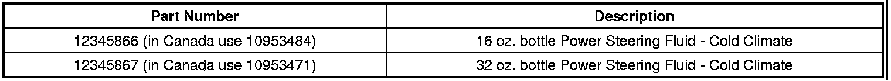

Power Steering - Fluid Leaks Due to Extreme Low Temps
TECHNICALBulletin No.: 12-02-32-002
Date: February 21, 2012
Subject: Power Steering Fluid Leak from Power Steering Pump, Gear or High Pressure Hose During Extreme Low Temperature Operation (Replace Power Steering Fluid)
Models:
2012 and Prior GM Passenger Cars and Light Duty Trucks
Condition
Some customers may comment that their vehicle is experiencing a power steering fluid leak from the power steering pump, gear or high pressure side power steering hose during extreme low outdoor temperature operation.
Cause
During extremely low temperatures, -30°C (-22°F) or lower, the power steering fluid may thicken and the power steering system pressures may rise, causing damage to various components.
Instructions
To resolve this condition, replace any damaged power steering system components, flush the power steering system and refill with Cold Climate power steering fluid. Refer to Power Steering in SI.

Parts Information

Disclaimer